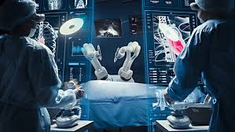

La IA está ayudando a los médicos a diagnosticar enfermedades mediante el análisis de imágenes, así como a descubrir tratamientos personalizados y optimizar la investigación médica a través del análisis de grandes volúmenes de datos.
La IA se utiliza para analizar grandes cantidades de datos médicos (como imágenes, registros clínicos y estudios genómicos) para ayudar a los médicos a identificar patrones que podrían pasar desapercibidos. Por ejemplo:Imágenes médicasen radiografías, resonancias magnéticas y tomografías computarizadas, y en el iagnóstico de enfermedades raras analizando bases de datos genómicas y fenotípicas
Medicina personalizada
La IA juega un papel clave en la medicina de precisión, la cual adapta los tratamientos a las características individuales del paciente. Al analizar datos genómicos y otros factores como estilo de vida y ambiente, la IA puede predecir cómo responderá una persona a un tratamiento específico, ajustando el enfoque terapéutico para maximizar su efectividad.
Los chatbots y asistentes virtuales basados en IA pueden proporcionar a los pacientes información sobre síntomas, recordatorios de medicamentos y asesoramiento médico preliminar. Estos sistemas pueden descongestionar los centros de salud al manejar consultas básicas y administrativas.

Robótica en cirugía
Los robots quirúrgicos asistidos por IA están revolucionando la cirugía, haciendo posible procedimientos mínimamente invasivos con mayor precisión. Por ejemplo, el sistema Da Vinci permite a los cirujanos realizar cirugías complejas mediante pequeñas incisiones, con la ayuda de brazos robóticos controlados por IA, lo que reduce errores humanos y acelera la recuperación del paciente.